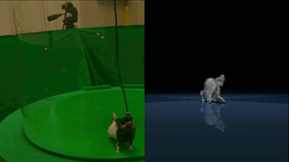

Research
Past research and projects that I have worked on and am currently working on.

MIMIC-MJX: Neuromechanical Emulation of Animal Behavior
Submitted to Nature Methods (2026)

Shaped by What's Missing: Topological Invariance Simplification Discovers Behavioral Transitions
In preparation for NeurIPS 2026

Emergent Motor Programs from Discrete Bottlenecks in Whole-Body Biomechanical Control
Accepted at Simulated Bodies (SimBodies) Conference (2026)

Beyond Flat Walks: Compositional Abstraction for Autoregressive Molecular Generation
In preparation for NeurIPS 2026

Publication list design inspired by Yuer Tang